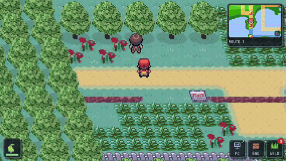
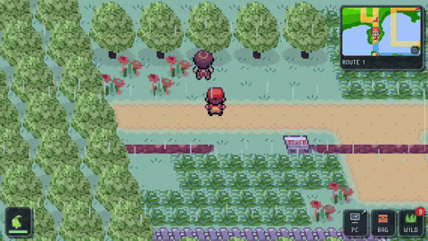
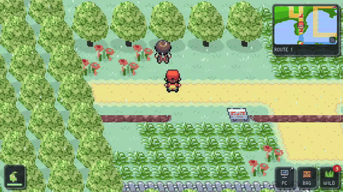
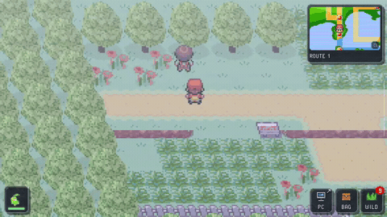
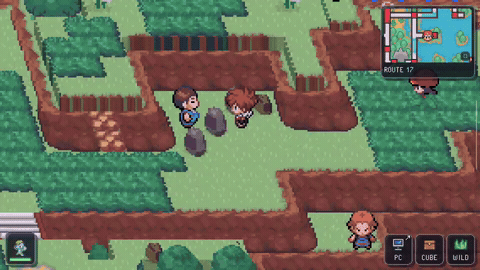
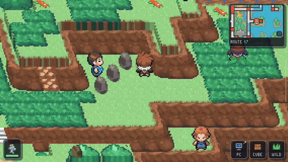
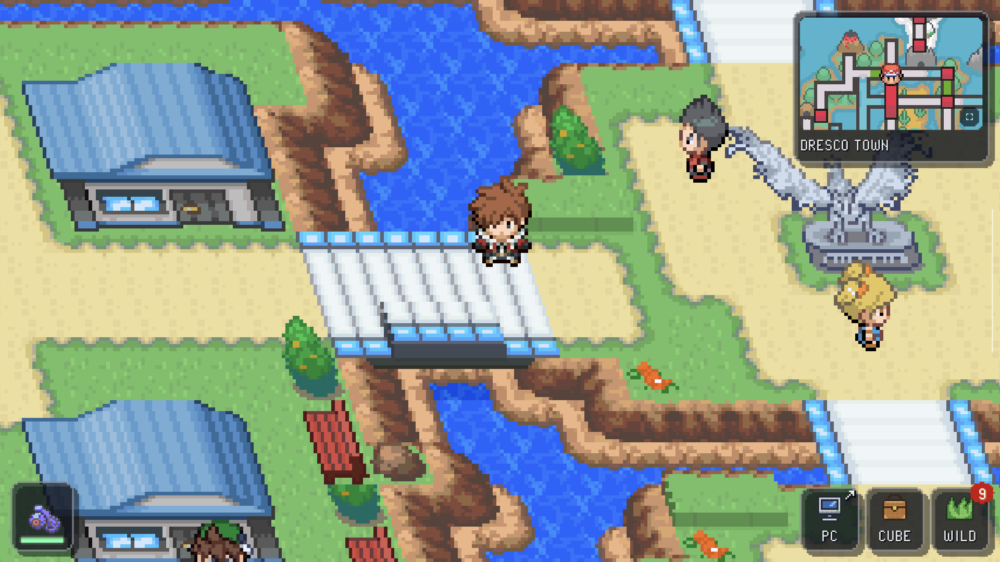

Back to builder
Android 3D scenery on the Thor
Download verified PokéDaisy APK
All three profiles passed the same APK’s field, idle battle, active battle and automatic climate tests, with return to the field visually checked. Raised grass, flowers, shrubs, selected rocks and Let’s Go palms use solid geometry. Unbound’s selected snow rocks retain stone sides and snow caps; stair and border tiles are excluded. Startup audio now fills a larger buffer before playback begins and preserves the final priming frame; normal game timing is retained. Live Strength and Rock Smash objects now use solid geometry in the qualified scenes. Automatic climate follows calendar seasons and selects season-weighted weather every 15 minutes, with gradual fades. Manual choices remain available; native scripted weather takes priority. Coverage remains incomplete.
Let’s Go Pikachu
Minimum sampled field / battle / active / climate FPS: 59.6 / 59.7 / 59.5 / 59.6. Zero unshown frames, dropped audio samples and active audio underruns in measured phases.


2D/3D, four seasons and battle captures
Radical Red
Minimum sampled field / battle / active / climate FPS: 59.6 / 59.7 / 59.6 / 59.6. Zero unshown frames, dropped audio samples and active audio underruns in measured phases.


2D/3D, four seasons and battle captures
Unbound
Minimum sampled field / battle / active / climate FPS: 59.6 / 59.7 / 59.7 / 59.7. Zero unshown frames, dropped audio samples and active audio underruns in measured phases.


2D/3D, four seasons and battle captures
Let’s Go Pikachu: weather and interactive rocks
 rain
rain snow
snow fog
fog boulder-moving
boulder-moving rock-smash
rock-smashRadical Red: weather and interactive rocks

rain
snow
fog boulder-moving
boulder-moving rock-smash
rock-smashUnbound: weather and interactive rocks
 rain
rain snow
snow fog
fog
boulder-moving
rock-smashUnbound seasons in Dresco Town
This green outdoor scene makes the foliage changes visible alongside the Frozen Heights gallery.




Automatic weather changing with the clock
Recorded on the Thor with no settings or clock changes. Rain fades out while autumn foliage remains stable.
Build 8e6f7969f6825155333ccdbf8522b20a5602777e; APK SHA-256 54c1d2b80124bb544d2f9ab462c83b113aeb95a2292c5dc6924c5dec21c43a69. Exact measurements and review scope. Targeted scenes, not full-playthrough certification. GIFs use 10 FPS for size.